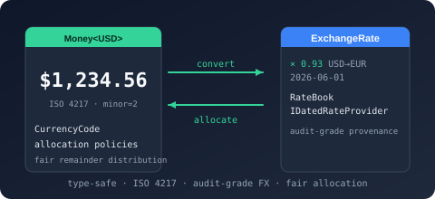

Namespace Bodu.Financial.Currencies

Purpose
Bodu.Financial.Currencies is the currency-metadata namespace of the Bodu.Financial package. It hosts the runtime metadata and lookup surface — the ICurrency contract, the CurrencyInfo record, the CurrencyRegistry catalogue, and the ICurrencyLookup resolution seam — alongside the shipped catalogue of 184 ISO 4217 currency tag types used as the TCurrency parameter on Money<TCurrency>. Each currency is a sealed class with only static members — there is no instance to create, and the tag exists solely to carry the static metadata (IsoCode, MinorUnits, CashRoundingIncrement, and historic flags where applicable) that Money<TCurrency> needs.
Static documentation
- Bodu.Financial introduction — how the tag types fit into the broader monetary surface.
- Working with
Money<TCurrency>— theICurrencytag pattern in context, including units outside the shipped catalogue.
Key types
Runtime metadata and lookup
- ICurrency — static-abstract interface with required
IsoCodeandMinorUnitsplus optionalCashRoundingIncrement,IsHistoric,DemonetizedOn,SuccessorIsoCode. - CurrencyInfo — runtime metadata record carrying the same fields.
- CurrencyRegistry — static, read-only catalogue over the shipped ISO 4217 currencies (active and historic).
- ICurrencyLookup, CurrencyLookupService — the lookup contract and the implementation that resolves ISO codes to metadata (the service registered by
AddFinancialService). - CurrencyResolution — the seam for substituting or restricting the metadata used for the shipped currencies (a test double, an alternate data source).
- CurrencyCode — the closed enum that identifies a currency on Money and the exchange types; one member per shipped ISO 4217 code, valued by its ISO numeric code.
- CurrencyCodeExtensions — catalogue helpers over
CurrencyCode:GetStatus,IsActive,IsHistoric, resolving each member's lifecycle status from its declarative attribute (cached at type initialization). - CurrencyStatusAttribute — the
[CurrencyStatus(...)]annotation on eachCurrencyCodemember that is the declarative source of truth for a currency's lifecycle status.
Catalogue shape
Every shipped currency type follows the same shape:
public sealed class USD : ICurrency
{
public static string IsoCode => "USD";
public static int MinorUnits => 2;
private USD() { }
}
Currencies with a cash-rounding convention declare the increment:
public sealed class CHF : ICurrency
{
public static string IsoCode => "CHF";
public static int MinorUnits => 2;
public static decimal CashRoundingIncrement => 0.05m;
private CHF() { }
}
Historic (demonetised) currencies declare the withdrawal metadata:
public sealed class DEM : ICurrency
{
public static string IsoCode => "DEM";
public static int MinorUnits => 2;
public static bool IsHistoric => true;
public static DateOnly? DemonetizedOn => new DateOnly(2002, 2, 28);
public static string? SuccessorIsoCode => "EUR";
private DEM() { }
}
Catalogue contents
The shipped catalogue covers every active ISO 4217 currency plus a curated set of historic / demonetised currencies for legacy ledger processing.
Active currencies (155) — including all G20 currencies and every minor-unit category:
MinorUnits = 0—JPY,KRW,CLP,ISK,VND,XAF,XOF,XPF,BIF,DJF,GNF,KMF,MGA,PYG,RWF,UGX,UYI,VUV.MinorUnits = 2—USD,EUR,GBP,AUD,CAD,CHF,CNY,HKD,INR,MXN,NZD,SEK,SGD, …MinorUnits = 3—BHD,IQD,JOD,KWD,LYD,OMR,TND.MinorUnits = 4—CLF,UYW.
Historic currencies (~30) — the twenty Euro-zone predecessors (ATS, BEF, CYP, DEM, EEK, ESP, FIM, FRF, GRD, HRK, IEP, ITL, LTL, LUF, LVL, MTL, NLG, PTE, SIT, SKK) plus other notable replacements (AZM, GHC, MZM, ROL, SRG, TMM, VEB, VEF, ZWL).
Cash rounding — CHF, AUD, CAD, NZD, SEK, NOK, ISK and a handful of others declare a non-zero CashRoundingIncrement for physical cash totals (5-rappen / 5-cent / 10-cent / whole-krone). See Cash rounding.
A unit outside the shipped catalogue
The shipped CurrencyCode catalogue is closed, so the runtime Money cannot hold a code it does not define. For a generic amount in a unit outside ISO 4217 — a commodity, a loyalty-point unit — implement ICurrency directly and use Money<TCurrency>; the tag carries its own precision and never consults the runtime catalogue (its IsoCode must still be three uppercase ASCII letters):
public sealed class XPT : ICurrency // troy ounces of platinum, say
{
public static string IsoCode => "XPT";
public static int MinorUnits => 4;
private XPT() { }
}
Money<XPT> holding = new Money<XPT>(12.3456m); // generic arithmetic only
Because XPT is not a CurrencyCode member, the value cannot bridge to the runtime-tagged Money. To substitute or restrict the metadata used for the shipped currencies — for a test, or an alternate data source — install a custom ICurrencyLookup through CurrencyResolution.
Notes
- Sealed + private constructor. Every tag type seals itself and hides its constructor, so the tag can only ever exist statically.
Money<USD>is the only way to materialise a value tagged as USD. - Static-abstract metadata. All members are static via the
ICurrencystatic-abstract pattern; consumers read them asTCurrency.IsoCodein generic code. - Optional members default sensibly.
CashRoundingIncrement,IsHistoric,DemonetizedOn,SuccessorIsoCodehave sensible defaults viastatic virtualso most currencies declare onlyIsoCodeandMinorUnits. - ISO numeric codes. CurrencyCode is an enum whose members are the three-letter ISO 4217 alphabetic codes and whose values are the corresponding ISO 4217 numeric codes; both active and historic codes are members — each annotated with a
[CurrencyStatus]attribute — alongside aNonesentinel valued0. - See also: the
Bodu.Financialreference, theMoney<TCurrency>guide,CurrencyRegistry.
Classes
AED
Identifies AED (United Arab Emirates Dirham) at the type-system level.
AFN
Identifies AFN (Afghani) at the type-system level.
ALL
Identifies ALL (Lek) at the type-system level.
AMD
Identifies AMD (Armenian Dram) at the type-system level.
ANG
Identifies ANG (Netherlands Antillean Guilder) at the type-system level.
AOA
Identifies AOA (Kwanza) at the type-system level.
ARS
Identifies ARS (Argentine Peso) at the type-system level.
ATS
Identifies ATS (Austrian Schilling) at the type-system level.
AUD
Identifies AUD (Australian Dollar) at the type-system level.
AWG
Identifies AWG (Aruban Florin) at the type-system level.
AZM
Identifies AZM (Old Azerbaijan Manat) at the type-system level.
AZN
Identifies AZN (Azerbaijan Manat) at the type-system level.
BAM
Identifies BAM (Convertible Mark) at the type-system level.
BBD
Identifies BBD (Barbados Dollar) at the type-system level.
BDT
Identifies BDT (Taka) at the type-system level.
BEF
Identifies BEF (Belgian Franc) at the type-system level.
BGN
Identifies BGN (Bulgarian Lev) at the type-system level.
BHD
Identifies BHD (Bahraini Dinar) at the type-system level.
BIF
Identifies BIF (Burundi Franc) at the type-system level.
BMD
Identifies BMD (Bermudian Dollar) at the type-system level.
BND
Identifies BND (Brunei Dollar) at the type-system level.
BOB
Identifies BOB (Boliviano) at the type-system level.
BRL
Identifies BRL (Brazilian Real) at the type-system level.
BSD
Identifies BSD (Bahamian Dollar) at the type-system level.
BTN
Identifies BTN (Ngultrum) at the type-system level.
BWP
Identifies BWP (Pula) at the type-system level.
BYN
Identifies BYN (Belarusian Ruble) at the type-system level.
BZD
Identifies BZD (Belize Dollar) at the type-system level.
CAD
Identifies CAD (Canadian Dollar) at the type-system level.
CDF
Identifies CDF (Congolese Franc) at the type-system level.
CHF
Identifies CHF (Swiss Franc) at the type-system level.
CLP
Identifies CLP (Chilean Peso) at the type-system level.
CNY
Identifies CNY (Yuan Renminbi) at the type-system level.
COP
Identifies COP (Colombian Peso) at the type-system level.
CRC
Identifies CRC (Costa Rican Colon) at the type-system level.
CUP
Identifies CUP (Cuban Peso) at the type-system level.
CVE
Identifies CVE (Cabo Verde Escudo) at the type-system level.
CYP
Identifies CYP (Cypriot Pound) at the type-system level.
CZK
Identifies CZK (Czech Koruna) at the type-system level.
CurrencyCodeExtensions
Provides lifecycle-status queries over CurrencyCode members.
CurrencyInfo
Carries the runtime metadata of a currency: ISO 4217 code, minor-unit precision, cash-rounding increment, and historicity / successor information.
CurrencyLookupService
Default ICurrencyLookup backed by CurrencyRegistry. Reverse indexes for numeric code, symbol, and region are built lazily from a snapshot of the registry taken on first use.
CurrencyRegistry
Read-only catalogue of CurrencyInfo entries keyed by ISO 4217 alphabetic code. Supports lookup by code and enumeration of every shipped currency.
CurrencyResolution
Supplies the ambient ICurrencyLookup that the runtime-tagged Money and CalculatedMoney consult when they resolve a currency by ISO code. The seam lets a host or test substitute a custom currency catalogue without threading a lookup dependency through every value-type construction, while leaving the default behaviour identical to a direct CurrencyRegistry lookup.
CurrencyStatusAttribute
Associates a CurrencyStatus with a CurrencyCode enum member.
DEM
Identifies DEM (Deutsche Mark) at the type-system level.
DJF
Identifies DJF (Djibouti Franc) at the type-system level.
DKK
Identifies DKK (Danish Krone) at the type-system level.
DOP
Identifies DOP (Dominican Peso) at the type-system level.
DZD
Identifies DZD (Algerian Dinar) at the type-system level.
EEK
Identifies EEK (Estonian Kroon) at the type-system level.
EGP
Identifies EGP (Egyptian Pound) at the type-system level.
ERN
Identifies ERN (Nakfa) at the type-system level.
ESP
Identifies ESP (Spanish Peseta) at the type-system level.
ETB
Identifies ETB (Ethiopian Birr) at the type-system level.
EUR
Identifies EUR (Euro) at the type-system level.
FIM
Identifies FIM (Finnish Markka) at the type-system level.
FJD
Identifies FJD (Fiji Dollar) at the type-system level.
FKP
Identifies FKP (Falkland Islands Pound) at the type-system level.
FRF
Identifies FRF (French Franc) at the type-system level.
GBP
Identifies GBP (Pound Sterling) at the type-system level.
GEL
Identifies GEL (Lari) at the type-system level.
GHC
Identifies GHC (Old Ghana Cedi) at the type-system level.
GHS
Identifies GHS (Ghana Cedi) at the type-system level.
GIP
Identifies GIP (Gibraltar Pound) at the type-system level.
GMD
Identifies GMD (Dalasi) at the type-system level.
GNF
Identifies GNF (Guinean Franc) at the type-system level.
GRD
Identifies GRD (Greek Drachma) at the type-system level.
GTQ
Identifies GTQ (Quetzal) at the type-system level.
GYD
Identifies GYD (Guyana Dollar) at the type-system level.
HKD
Identifies HKD (Hong Kong Dollar) at the type-system level.
HNL
Identifies HNL (Lempira) at the type-system level.
HRK
Identifies HRK (Croatian Kuna) at the type-system level.
HTG
Identifies HTG (Gourde) at the type-system level.
HUF
Identifies HUF (Forint) at the type-system level.
IDR
Identifies IDR (Rupiah) at the type-system level.
IEP
Identifies IEP (Irish Pound) at the type-system level.
ILS
Identifies ILS (New Israeli Sheqel) at the type-system level.
INR
Identifies INR (Indian Rupee) at the type-system level.
IQD
Identifies IQD (Iraqi Dinar) at the type-system level.
IRR
Identifies IRR (Iranian Rial) at the type-system level.
ISK
Identifies ISK (Iceland Krona) at the type-system level.
ITL
Identifies ITL (Italian Lira) at the type-system level.
JMD
Identifies JMD (Jamaican Dollar) at the type-system level.
JOD
Identifies JOD (Jordanian Dinar) at the type-system level.
JPY
Identifies JPY (Yen) at the type-system level.
KES
Identifies KES (Kenyan Shilling) at the type-system level.
KGS
Identifies KGS (Som) at the type-system level.
KHR
Identifies KHR (Riel) at the type-system level.
KMF
Identifies KMF (Comorian Franc) at the type-system level.
KPW
Identifies KPW (North Korean Won) at the type-system level.
KRW
Identifies KRW (Won) at the type-system level.
KWD
Identifies KWD (Kuwaiti Dinar) at the type-system level.
KYD
Identifies KYD (Cayman Islands Dollar) at the type-system level.
KZT
Identifies KZT (Tenge) at the type-system level.
LAK
Identifies LAK (Lao Kip) at the type-system level.
LBP
Identifies LBP (Lebanese Pound) at the type-system level.
LKR
Identifies LKR (Sri Lanka Rupee) at the type-system level.
LRD
Identifies LRD (Liberian Dollar) at the type-system level.
LSL
Identifies LSL (Loti) at the type-system level.
LTL
Identifies LTL (Lithuanian Litas) at the type-system level.
LUF
Identifies LUF (Luxembourg Franc) at the type-system level.
LVL
Identifies LVL (Latvian Lats) at the type-system level.
LYD
Identifies LYD (Libyan Dinar) at the type-system level.
MAD
Identifies MAD (Moroccan Dirham) at the type-system level.
MDL
Identifies MDL (Moldovan Leu) at the type-system level.
MGA
Identifies MGA (Malagasy Ariary) at the type-system level.
MKD
Identifies MKD (Denar) at the type-system level.
MMK
Identifies MMK (Kyat) at the type-system level.
MNT
Identifies MNT (Tugrik) at the type-system level.
MOP
Identifies MOP (Pataca) at the type-system level.
MRU
Identifies MRU (Ouguiya) at the type-system level.
MTL
Identifies MTL (Maltese Lira) at the type-system level.
MUR
Identifies MUR (Mauritius Rupee) at the type-system level.
MVR
Identifies MVR (Rufiyaa) at the type-system level.
MWK
Identifies MWK (Malawi Kwacha) at the type-system level.
MXN
Identifies MXN (Mexican Peso) at the type-system level.
MYR
Identifies MYR (Malaysian Ringgit) at the type-system level.
MZM
Identifies MZM (Old Mozambican Metical) at the type-system level.
MZN
Identifies MZN (Mozambique Metical) at the type-system level.
NAD
Identifies NAD (Namibia Dollar) at the type-system level.
NGN
Identifies NGN (Naira) at the type-system level.
NIO
Identifies NIO (Cordoba Oro) at the type-system level.
NLG
Identifies NLG (Netherlands Guilder) at the type-system level.
NOK
Identifies NOK (Norwegian Krone) at the type-system level.
NPR
Identifies NPR (Nepalese Rupee) at the type-system level.
NZD
Identifies NZD (New Zealand Dollar) at the type-system level.
OMR
Identifies OMR (Rial Omani) at the type-system level.
PAB
Identifies PAB (Balboa) at the type-system level.
PEN
Identifies PEN (Sol) at the type-system level.
PGK
Identifies PGK (Kina) at the type-system level.
PHP
Identifies PHP (Philippine Peso) at the type-system level.
PKR
Identifies PKR (Pakistan Rupee) at the type-system level.
PLN
Identifies PLN (Zloty) at the type-system level.
PTE
Identifies PTE (Portuguese Escudo) at the type-system level.
PYG
Identifies PYG (Guarani) at the type-system level.
QAR
Identifies QAR (Qatari Rial) at the type-system level.
ROL
Identifies ROL (Old Romanian Leu) at the type-system level.
RON
Identifies RON (Romanian Leu) at the type-system level.
RSD
Identifies RSD (Serbian Dinar) at the type-system level.
RUB
Identifies RUB (Russian Ruble) at the type-system level.
RWF
Identifies RWF (Rwanda Franc) at the type-system level.
SAR
Identifies SAR (Saudi Riyal) at the type-system level.
SBD
Identifies SBD (Solomon Islands Dollar) at the type-system level.
SCR
Identifies SCR (Seychelles Rupee) at the type-system level.
SDG
Identifies SDG (Sudanese Pound) at the type-system level.
SEK
Identifies SEK (Swedish Krona) at the type-system level.
SGD
Identifies SGD (Singapore Dollar) at the type-system level.
SHP
Identifies SHP (Saint Helena Pound) at the type-system level.
SIT
Identifies SIT (Slovenian Tolar) at the type-system level.
SKK
Identifies SKK (Slovak Koruna) at the type-system level.
SLE
Identifies SLE (Leone) at the type-system level.
SOS
Identifies SOS (Somali Shilling) at the type-system level.
SRD
Identifies SRD (Surinam Dollar) at the type-system level.
SRG
Identifies SRG (Suriname Guilder) at the type-system level.
SSP
Identifies SSP (South Sudanese Pound) at the type-system level.
STN
Identifies STN (Dobra) at the type-system level.
SVC
Identifies SVC (El Salvador Colon) at the type-system level.
SYP
Identifies SYP (Syrian Pound) at the type-system level.
SZL
Identifies SZL (Lilangeni) at the type-system level.
THB
Identifies THB (Baht) at the type-system level.
TJS
Identifies TJS (Somoni) at the type-system level.
TMM
Identifies TMM (Old Turkmenistan Manat) at the type-system level.
TMT
Identifies TMT (Turkmenistan New Manat) at the type-system level.
TND
Identifies TND (Tunisian Dinar) at the type-system level.
TOP
Identifies TOP (Pa’anga) at the type-system level.
TRY
Identifies TRY (Turkish Lira) at the type-system level.
TTD
Identifies TTD (Trinidad and Tobago Dollar) at the type-system level.
TWD
Identifies TWD (New Taiwan Dollar) at the type-system level.
TZS
Identifies TZS (Tanzanian Shilling) at the type-system level.
UAH
Identifies UAH (Hryvnia) at the type-system level.
UGX
Identifies UGX (Uganda Shilling) at the type-system level.
USD
Identifies USD (US Dollar) at the type-system level.
UYU
Identifies UYU (Peso Uruguayo) at the type-system level.
UZS
Identifies UZS (Uzbekistan Sum) at the type-system level.
VEB
Identifies VEB (Venezuelan Bolívar) at the type-system level.
VEF
Identifies VEF (Venezuelan Bolívar Fuerte) at the type-system level.
VES
Identifies VES (Bolivar Soberano) at the type-system level.
VND
Identifies VND (Dong) at the type-system level.
VUV
Identifies VUV (Vatu) at the type-system level.
WST
Identifies WST (Tala) at the type-system level.
XAF
Identifies XAF (CFA Franc BEAC) at the type-system level.
XCD
Identifies XCD (East Caribbean Dollar) at the type-system level.
XOF
Identifies XOF (CFA Franc BCEAO) at the type-system level.
XPF
Identifies XPF (CFP Franc) at the type-system level.
YER
Identifies YER (Yemeni Rial) at the type-system level.
ZAR
Identifies ZAR (Rand) at the type-system level.
ZMW
Identifies ZMW (Zambian Kwacha) at the type-system level.
ZWG
Identifies ZWG (Zimbabwe Gold) at the type-system level.
ZWL
Identifies ZWL (Zimbabwe Dollar) at the type-system level.
Interfaces
ICurrency
Identifies a currency at the type-system level, supplying the ISO 4217 code, minor-unit precision, and optional cash-rounding and historicity metadata used by Money<TCurrency>.
ICurrencyLookup
Resolves CurrencyInfo metadata by ISO code, numeric code, symbol, region, or culture, providing NodaMoney-style lookup ergonomics over the runtime currency catalogue without moving currency identity into culture.
Enums
CurrencyCode
Source-generated enumeration of the ISO 4217 currencies shipped with Bodu.Financial.
CurrencyStatus
Describes the ISO 4217 lifecycle status of a CurrencyCode member.